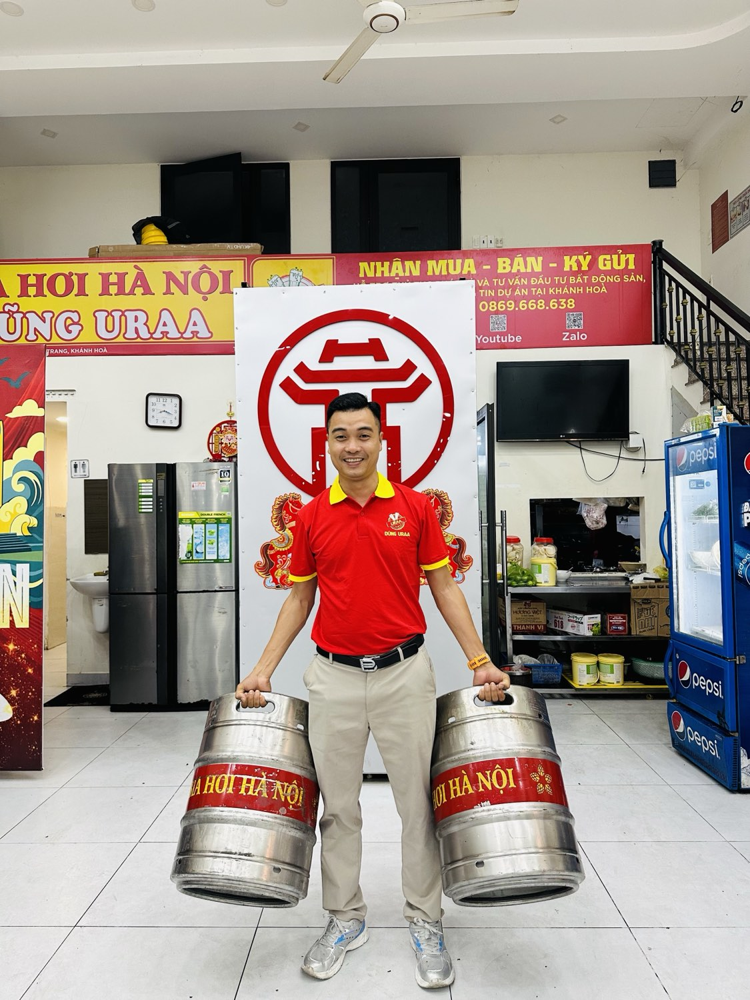
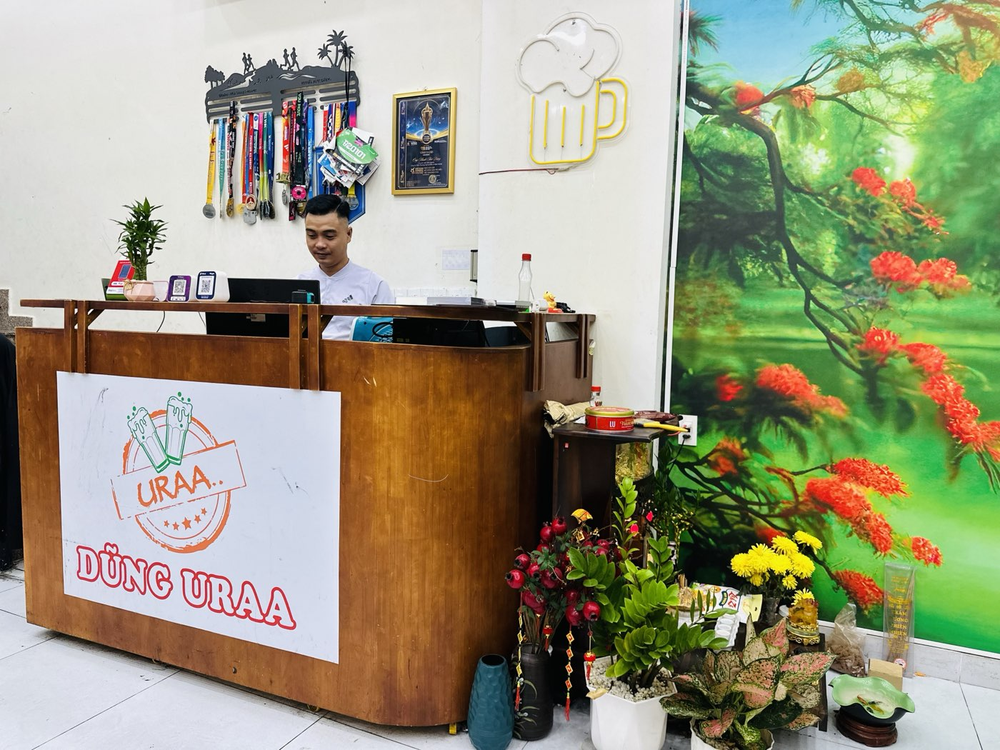

Từ 6 quán còn 1 quán: thu gọn không phải thất bại — là chọn sống sót
Người ta thích kể chuyện từ một quán thành sáu quán. Chuyện của tôi ngược lại: từ sáu quán còn một — và đến giờ tôi vẫn coi đó là quyết định đúng nhất đời kinh doanh của mình.

Thời 6 cơ sở — khi chúng tôi nghĩ "nhiều là mạnh"
Sau quán bia hơi đầu tiên ở Nha Trang, hệ thống của anh em chúng tôi lớn nhanh: thêm cơ sở trong thành phố, xuống Cam Ranh, lên tận Buôn Ma Thuột — thời điểm cao nhất là 6 cơ sở. Niềm tin lúc đó rất đơn giản: mô hình đã chạy được thì cứ nhân lên.
Khai trương liên tục, cờ hoa múa lân liên tục. Đó là quãng thời gian đẹp — và cũng là quãng tôi hiểu sai một điều căn bản về kinh doanh.
Khi thị trường đổi chiều — "nhiều" thành "nặng"
Giai đoạn 2022–2023, khó khăn đến cùng lúc từ nhiều phía: sức mua yếu đi, chi phí tăng, và bản thân tôi cũng đang đi qua giai đoạn tài chính khó khăn nhất.
Lúc đó tôi mới nhìn rõ: 6 cơ sở không phải là mạnh gấp 6. Nó là 6 lần tiền thuê mặt bằng, 6 bài toán nhân sự, 6 nơi cần con mắt của mình — trong khi sức mình chỉ có một. Chất lượng ly bia, đĩa mồi ở nơi mình không đứng được mỗi ngày cứ chênh vênh dần.
Dàn trải là cách chậm nhất — và êm ái nhất — để chết trong ngành ăn uống. Vì ngày nào quán cũng vẫn mở cửa, nên mình tưởng mọi thứ vẫn ổn.
Chọn giữ "cái nôi"
Hệ thống thu gọn dần, anh em mỗi người một hướng. Vợ chồng tôi đứng trước lựa chọn: giữ nơi nào?
Chúng tôi chọn quán đầu tiên — không phải vì nó to nhất, mà vì cái lõi của cả hành trình nằm ở đó: tệp khách quen đã uống với mình từ ngày đầu, đội ngũ hiểu việc, và cái vị bia được chăm đúng chuẩn mà chúng tôi tự tin nhất. Rồi làm một việc mà đến giờ tôi vẫn thấy "liều" hơn cả mở 6 quán: đổi tên quán thành DŨNG URAA — đặt tên mình lên biển hiệu.
Dám để tên mình trên biển nghĩa là hết đường lùi: ly bia dở, đĩa mồi nguội — khách réo đúng tên mình, không đổ cho ai được nữa.

3 bài học thu gọn — cho anh/chị nào đang khó
1. Cắt sớm, khi mình còn được quyền chọn. Cắt sớm thì mình chọn giữ cái gì; để lâu, thị trường sẽ cắt hộ — và thị trường không bao giờ cắt nhẹ tay.
2. Giữ thứ mình làm TỐT NHẤT, không phải thứ TO NHẤT. Cơ sở lớn nhất của chúng tôi không phải quán được giữ lại. Quán được giữ là nơi chúng tôi làm tốt nhất — và hóa ra đó mới là tài sản thật.
3. Thu gọn đến mức "ăn ngon, ngủ yên". Đây là chuẩn tôi áp cho mọi quyết định tiền bạc từ sau giai đoạn đó, cùng với 3 câu tôi tự hỏi mỗi ngày. Quy mô đúng là quy mô mình ngủ được.
Quán "còn lại" ấy hôm nay sáng đèn đều mỗi tối, khách quen chiếm đa số, vợ tôi đứng quán mỗi ngày còn tôi có mặt mỗi tối sau giờ làm bất động sản. Không hoành tráng — nhưng chắc.

Nếu anh/chị đang phải thu gọn một thứ gì đó — công việc kinh doanh, danh mục đầu tư, hay chính quỹ thời gian của mình — mong câu chuyện 6 quán còn 1 này cho anh/chị một chút yên tâm: gọn lại không phải đi lùi. Là dồn sức để đi tiếp.
Sống tử tế · Kiếm tiền hạnh phúc · Cho đi giá trị
Ghé thử quán "còn lại" ấy một lần?
DŨNG URAA — Số 07D, Tầng 1, Chung cư XH1, VCN Phước Long 2, Nam Nha Trang · Mở cửa 10h–23h hằng ngày. Anh/chị ghé, sẽ hiểu vì sao chúng tôi giữ đúng quán này.
Đặt bàn qua Zalo Chỉ đường Google Maps